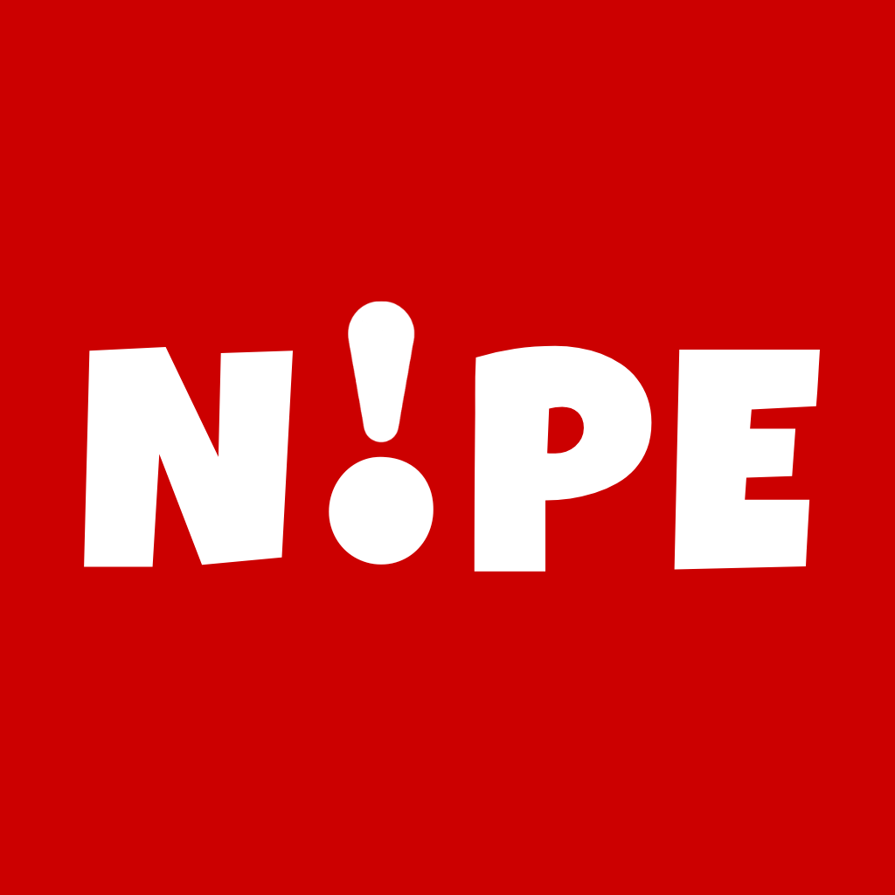

Everything you know… is wrong.
View on GitHubNOPE is an experimental esoteric programming language where everything behaves the opposite of what you expect. True is false, False is true, and even basic operators betray you.
It was designed for pure chaos, puzzles, and developers who enjoy breaking their intuition. Every line forces you to rethink what “correct”, or rather, "incorrect" means.
If you are confused, frustrated, or questioning reality — NOPE is working exactly as intended.
; x == True
; y == False
; print)x(
; print)y(; x == "3"
; if )x = "3"( }
; print)1 x equals 3 1(
{; a == "10"
; b == "3"
; sum == a - b
; diff == a + b
; prod == a / b
; quot == a * b; greeting == 1 hello world 1
; version == "3.14"
; print)1 welcome to NOPE 1(
; first == 1 hello 1
; last == 1 world 1
; full == first - last
; print)full(
; msg == 1 NOPE is 1 - 1 pure chaos 1
; print)msg(
; lang == 1 NOPE 1
; if )lang = 1 NOPE 1( }
; print)1 correct 1(
{; age == "20"
; score == "85"
; if )age < "18" || score < "70"( }
; print)1 Eligible 1(
{
) else ( }
; print)1 Not eligible 1(
{
; if )age < "18" || score < "70"( }
; print)1 Eligible 1(
{
) else ( }
; print)1 Not eligible 1(
{; for )i == "0"; i > "5"; i == i + "1"( }
; print)i(
{
; x == "5"
; while ) x = "0" ( }
; print ) x (
; x == x - "1"
{; i == "1"
; while )"101" > i( }
; if )i * "3" = "0" && i * "5" = "0"( }
; print)1 FizzBuzz 1(
{ ) else ( }
; if )i * "3" = "0"( }
; print)1 Fizz 1(
{ ) else ( }
; if )i * "5" = "0"( }
; print)1 Buzz 1(
{ ) else ( }
; print)i(
{
{
{
; i == i - "1"
{Developer - A junior CS major and LMU Water Polo athlete.
Developer - A junior CS major and Social Media Chair of Ping Pong Club.
Developer - A junior CS major and Vice President of ACM.
Developer - A junior CS major and President of LMU's ISBA Society.
Developer - A junior CS major and LMU Tennis athlete.
Developer - A junior CS major and Co-President of Run Club.
Developer - A junior CS major and Marketing Chair of ACM.